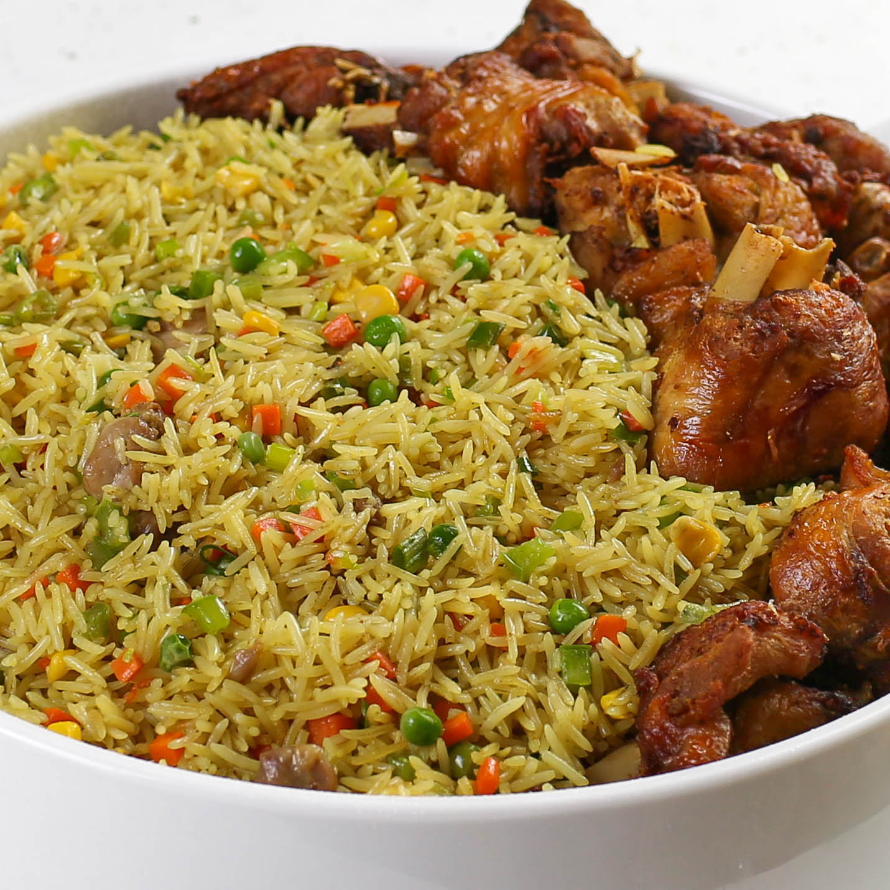

Fried Rice
Home

Description
A beloved west-african dish known for its aromatic scent and taste.
Ingredient
- Washed Rice
- Grounded Pepper & Tomatoes mix
- Sachet tomato paste
- (Sliced) Onions
- Groundnut oil
- Bay leaves
- Maggi cubes & Seasoning
- Salt
- Meat stock
Steps
- Pour in the Groundnut oil into the pot on the heat(gas/stove)
- Then the sliced onions and tomato paste go in
- Afterwards, pour in the grounded pepper&tomato mix, let it cook/fry for 3-5 minutes, make sure you add in maggi cubes and seasoning with salt to taste.
- Add in washed rice and then, meat stock, stir thoroughly and add not-too-much water(sits just slightly above the level of the rice), cover the pot tightly and cook on low-medium heat until the liquid is fully absorbed and the rice is tender